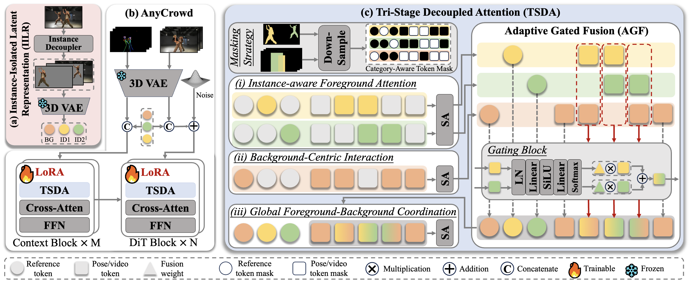

Controllable character animation has advanced rapidly in recent years, yet multi-character animation remains underexplored. As the number of characters grows, multi-character reference encoding becomes more susceptible to latent identity entanglement, resulting in identity bleeding and reduced controllability. Moreover, learning precise and spatio-temporally consistent correspondences between reference identities and driving pose sequences becomes increasingly challenging, often leading to identity-pose mis-binding and inconsistency in generated videos.
To address these challenges, we propose AnyCrowd, a Diffusion Transformer (DiT)-based video generation framework capable of scaling to an arbitrary number of characters. Specifically, we first introduce an Instance-Isolated Latent Representation (IILR), which encodes character instances independently prior to DiT processing to prevent latent identity entanglement. Building on this disentangled representation, we further propose Tri-Stage Decoupled Attention (TSDA) to bind identities to driving poses by decomposing self-attention into: (i) instance-aware foreground attention, (ii) background-centric interaction, and (iii) global foreground-background coordination. Furthermore, to mitigate token ambiguity in overlapping regions, an Adaptive Gated Fusion (AGF) module is integrated within TSDA to predict identity-aware weights, effectively fusing competing token groups into identity-consistent representations.
To validate effectiveness and scalability, we curate Multi-Character-Dancing-7K (MCD-7K), containing 7,384 clips (~31 hours) of 2--6 performers, and establish a held-out benchmark, MCD-300, featuring 2--9 characters per clip. Extensive experiments show that AnyCrowd outperforms state-of-the-art single- and multi-character baselines, with ablations confirming each component's contribution. Notably, AnyCrowd generalizes zero-shot to unseen crowd densities and supports flexible identity-motion recasting.

Overview of AnyCrowd. (a) Instance-Isolated Latent Representation (IILR): The reference image with C identities is decoupled into C+1 isolated images and encoded into identity-decoupled reference tokens. (b) Architecture: AnyCrowd is built upon a dual-stream DiT architecture, where the Context and DiT branches process conditioning signals and perform iterative denoising. (c) Tri-Stage Decoupled Attention (TSDA): This mechanism facilitates explicit identity-pose binding during the self-attention process, incorporating an Adaptive Gated Fusion (AGF) module to adaptively fuse overlapping tokens from different categories.
In the self-driven setting, the reference image and driving pose sequence are extracted from the same video.
In the cross-driven setting, the reference image and driving pose sequence are extracted from different videos with distinct identities.
AnyCrowd can easily animate one reference character with multiple driving pose sequences.
AnyCrowd can easily animate multiple distinct reference characters with single driving pose sequences.
AnyCrowd supports arbitrary assignments between IDs and pose sequences.
Although AnyCrowd is trained on 49-frame sequences, it is able to generate 98-frame videos during inference through a sliding-window mechanism.
@article{xie2026anycrowd,
author = {Xie, Zhenyu and Xia, Ji and Kampffmeyer, Michael and Hu, Panwen and Ma, Zehua and Zheng, Yujian and Wang, Jing and Chong, Zheng and Zhang, Xujie and Cheng, Xianhang and Liang, Xiaodan and Li, Hao},
title = {AnyCrowd: Instance-Isolated Identity-Pose Binding for Arbitrary Multi-Character Animation},
journal = {},
year = {2026},
}